川崎観音/山口県周南市
山口県の周南市、旧新南陽エリア。
目の前には国道2号線があり、トラックがガンガン走りまくりの荒くれまくり。
そんな国道沿いの川崎観音は車の喧騒に押し潰されそうな佇まい。
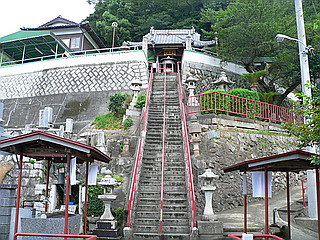
境内は傾斜地にあり、観音堂は階段を登ったところにある。
その階段の下に平景清の目洗いの井戸がある。
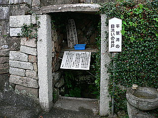
平景清とは平安時代末期の平家の武将で、頼朝への復讐心を捨てるために目をくりぬいたと言う豪快な伝説が残る人物だ。
頼朝を討とうと奈良の大仏さんでお馴染み東大寺の転害門で待ち伏せした件は謡曲の「大仏供養」にも登場する。
もっとも浄瑠璃や謡曲によく登場する人物だけにこの目洗い伝説だけでも西日本にいくつかあるようで、この手の伝説には眉に唾を付けてっと。
そんなわけでここ川崎観音は眼病平癒の祈願所として有名であった。元々は。
階段を上り、観音堂の裏手に回ると何やら怪しげなオーラがムンムン。
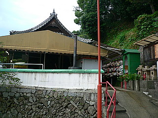
そこにはたくさんの乳絵馬が吊り下げられていた。
乳絵馬といえば愛知県の間々観音や広島県の阿伏兎観音などが有名だ。また、先般当サイトでも同じ山口県内の帯石観音を紹介させていただいたばかり。
かように乳絵馬は日本中で広く見られる信仰装置だがここの乳絵馬は一味もふた味も違うのだ。
だってこんなですから。
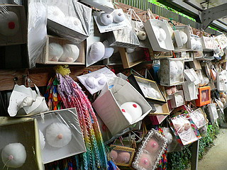 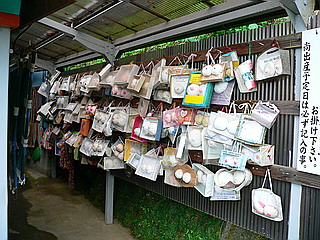
ひとつひとつの乳が大事そうに箱に入ってるんです。
通常の乳絵馬は家型の木の板（つまり普通の絵馬ですね）に布で作った乳型を付ける。
しかしここの乳絵馬は見事なまでに箱入りおっぱい。
最早こうなると絵馬とすら呼ぶのもどうかと思うが、若干の無理を承知で乳絵馬という呼称で通させてもらいます。
このような形態の乳絵馬は初めて見たぞ！
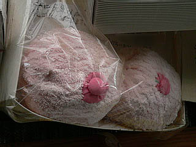 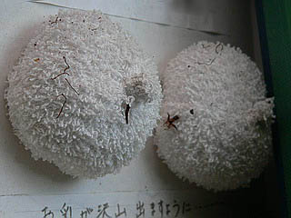
タオル地の乳型とか何故かグッと来ますね。
中にはやけに豪華なケース（といっても100均に売ってそうだが）に入って梱包材にリボン付き、というモノまで。
これを単品で見たらとても乳絵馬とは思えない。プレゼントのお菓子みたいなところまで変容しちゃってる。
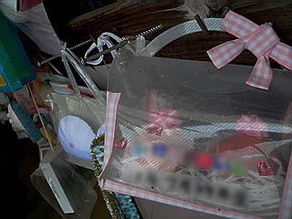
こちらは御丁寧にも首から肩までも作られている。
タッパー入りの力作だ。
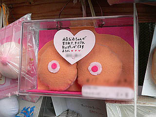
みな努めてコミカル路線を爆走している。
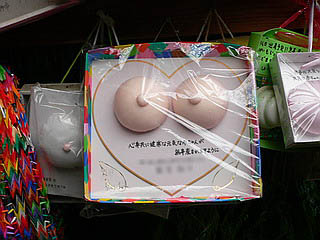
こちらも最早おっぱいとは思えない造型。耳まで付いちゃって、愚愚ガンモかっつーの。
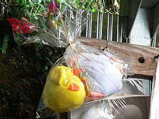 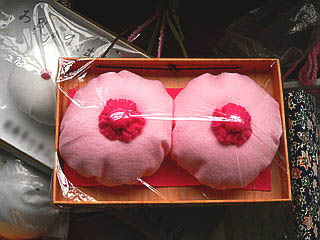
バボちゃんに進化したおっぱい。
ファンシーな出来合いとは裏腹に景清公のくりぬかれた目とオーバーラップしてきちゃうんですけど…
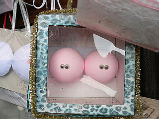
なぜこのようなユニークな乳絵馬が誕生したのか？
ひとつはおっぱいを作って奉納するという行為への照れがあると思う。従来の乳絵馬があまりにも生々しいために誰かがコミカルな乳型を奉納して、そこから広まったのではなかろうか。そしてその背景には習俗や伝統とあまり縁のない若い女性が主な奉納者だという事もあるだろう。
このように古くから伝わる民間信仰が現代のセンスを取り込み変化していく様子は私は大好きである。
元々民間信仰自体というものは現世利益を求めてその時代時代に即した形状で「進化」していくものなのだから実に正しい信仰の形態なのだ。
昔からのやり方で意固地になって文化財に指定されて博物館入りするのも良し。こうして時代に即したやり方で信仰を続けるのもまた新しい民俗、習俗の誕生として尊重されるべきであろう。
年配の方からは「今の若い人は…」と眉をひそめられ、学者さんからは「日本の古き伝統が…」とか言われそうだが、若いお母さん達はそんな声にはめげずどんどんアバンギャルドな乳絵馬を作っちゃっていただきたいものである。
頑張れ！新米ママさん！
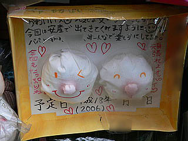
日本最先端の民間信仰形態として注目すべき乳絵馬だが、そこに込められた生まれてくる子供への思いは今も昔も変わらない、ということは忘れてはならない。
2006.08.